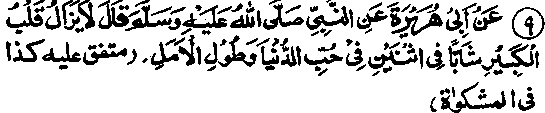
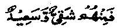
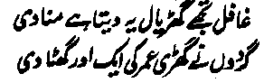

Chapter Six · Section (d): Ahadith on the foregoing subjects (concerning the excellence of Tawakkul)
Hadith 9

Rasulullah Sallallaho alaihe wasallam has said, "The heart of an old man always remains youthful with regard to two things: love of the world and inordinate longing (about distant future)". (Mishkaat)
Note: We have discussed in detail, under the preceding Hadith, that the term ‘Dunya’ or the world’ signifies love for wealth, which has been repeatedly condemned in the Holy Qur’an and Ahadith. In this Hadith, Rasulullah Sallallaho alaihe wasallam has admonished us about another very important matter, the truth of which can even be verified by experience. It is a common observation that love of the world increases with old age, and one begins to entertain much higher hopes regarding distant future. The older a person grows and the nearer his hour of death approaches, the stronger his ambitions grow, concerning the marriages of his children, the building of lofty mansions, increase in property and extension in the estate, etc. It is therefore, necessary to guard oneself against one’s own greed especially at this age.
In another Hadith, Rasulullah Sallallaho alaihe wasallam is reported to have said? "Man grows old but two things remain young in him; greed for wealth and desire for long life". (Mishkaat). Desire for long life is just another name for the high hopes and expectations about distant future. For, as a man grows old and his hour of death approaches nearer, he engages himself in preparations for his life even more desperately, as though he were to live here forever, and he is least prepared to meet his death.
Once Rasulullah Sallallaho alaihe wasallam drew a square (by way of illustration). In the middle of the square, he drew a long line which went out even beyond it. Then on both sides of the middle line, he drew some small lines reaching up to it. The Divines (Ulama) have given various descriptions of this diagram, of which the following diagram is easy to understand:
The Holy Prophet then said, pointing to the middle line, ‘This is man and this, (the square) which is surrounding him on all sides, is his death: he can by no means escape it. This, which goes beyond the square, is his hope; he entertains hopes that go even beyond his fixed period of life. And these small lines are the misfortunes? ailments, accidents, turns of fortune, etc., that haunt him at all times, each small line representing a misfortune; if one misses him, the other seizes him and, above all, death surrounds him on all sides. But hope goes even beyond the period of life destined for him".
Another Hadith says that once Rasulullah Sallallaho alaihe wasallam put his hand on the back of his head and said, "This is his death hovering over him". He then stretched out his other arm and said, "These are his hopes stretching farther and farther". According to another Hadith, Rasulullah Sallallaho alaihe wasallam once said, "In the beginning the well-being of this Ummah was based on its firm belief in Akhirah and disregard for worldly things; and the first thing to cause its corruption will be niggardliness and inordinate longing about the distant future". (Mishkaat) There is another Hadith on the same subject, to the following effect: The early period of this Ummah attained salvation by virtue of its firm belief in Allah Ta'ala And disregard for worldly things; the last of it will be damned through niggardliness and high hopes regarding distant future." (Targheeb)
Still another Hadith has it to the following effect "A time is approaching when people will invite one another to destroy you (the Muslims), as people invite one another to partake food served for eating” (he. every nation will persuade and invite others to join hands With them for destroying the Muslims somehow). When the Sahabah Radhiallaho anhum asked, "O Rasulullah!, Will it be because of our small numbers at that time"? Rasulullah replied, "No, you will be in large numbers at that time; but you will be like the froth on flood water. Allah Ta'ala will take away fear of you from the hearts of your enemies and put Wahn’ (enervation) into your own hearts. The Sahabah asked him, "What is Walin’ (enervation) and he replied, "Love of the world and dislike of death". (Mishkaat).
Umme Waleed Radhiallaho anha daughter of Umar Radhiallaho anho says that one evening Rasulullah Sallallaho alaihe wasallam came out of his house and said, "Aren’t you ashamed of yourselves?" When the Sahabah Radhiallaho anhum asked what the matter was, he replied, "You store up more food than you eat; build more houses than you live in; and entertain such hopes as you can not fulfill. Are you not ashamed of such behaviour? (Targheeb) That is to say,“You build houses much larger than you need? One should build a house only as big as is necessary for one’s requirements,The Hadith also admonishes not toi store up things in excess of one’s needs, for what exceeds one’s needs is not to be stored up, but should be spent for the cause of Allah. Aishah Radhiallaho anha narrates that once, when Rasulullah Sallallaho alaihe wasallam was seated on the pulpit while the Sahabah Radhiallaho anhum were sitting around him in a circle, he said: "O people, observe due modesty in your attitude towards Allah Ta'ala (Take care not to do or say anything which might cause you to be ashamed of yourselves in the presence of Allah Ta'ala". The Sahabah submitted, "Certainly, O Rasulullah, we do not do anything unsuitable in the presence of Allah Ta'ala". Rasulullah Sallallaho alaihe wasallam then said, "Whosoever among you has this modesty',i.e. is afraid to indulge in things that might shame him before Allah Ta'ala), must keep death in view during every night; must guard his belly and what it surrounds; must guard his head and what it contains; and must remain in constant remembrance of death and decay, and must forsake the adornments of the world." (Targheeb)
The Ulama say that the injunction to guard his head’ means that he must not bow his head before any one except Allah Ta'ala, neither for worship nor out of reverence; nor should he make a deep bow while giving salutation to anyone. Similarly, the phrase, guard what the head contains means that he must guard his eyes, ears, tongue, etc. And ‘guarding the belly’ means protecting oneself against eating unlawful or doubtful things; that which the belly surrounds includes all parts of the body close to the belly, like hands feet, heart, private parts; he should guard all these against disobedience.
Imaam Nawawi Rahmatullah alaihe says that it is commendable (Mustahab) to recite this Hadith frequently. Abdullah Ibne Mas'ood Radhiallaho anho narrates that once Rasulullah Sallallaho alaihe wasallam said, "O people, observe due modesty in your attitude towards Allah Ta'ala." We submitted, "Certainly O Rasulullah, we all have this modesty. Allah he praised!'Rasulullah Sallallaho alaihe wasallam then said, I do not mean modesty in the ordinary sense; but he who observes due modesty towards Allah Ta'ala must guard his head and what it contains, must guard his belly and what it surrounds (private parts, etc.); must remain in constant remembrance of death and decay; and he who desires the Akhirah must forsake this world." Since, by frequent remembrance of death, one is sure to develop a feeling of disregard for this world and a tendency to restrict one’s hopes and ambitions, so Rasulullah Sallallaho alaihe wasallam has enjoined upon us to keep death in constant remembrance.
Once, a person came to Rasulullah Sallallaho alaihe wasallam and said, "O Rasulullah, who is the greatest ‘Zaahid’? (i.e. one least concerned about worldly good)". Rasulullah Sallallaho alaihe wasallam replied, "He who never forgets his own death and decay, abandons the adornments of the world, prefers the Hereafter to this life, never feels sure that he will live till tomorrow, and counts himself among the dead, that he is going to die soon and join the dead"(Targheeb)
Abu Hurairah Radhiallaho anho reports Rasulullah Sallallaho alaihe wasallam as saying, "Have constant remembrance of death, the cutter-off of pleasures; for him who. remembers it in straitened circumstances, it brings ease and consolation (he can console himself with the thought that death is inevitable and will put an end to his hardships); and he who remembers it in prosperity, is restrained from spending lavishly." (He cannot find much pleasure in the luxuries of the world, because his mind is distracted by thoughts of death).
Ibne Umar Radhiallaho anho has also narrated a Hadith to the effect that once Rasulullah Sallallaho alaihe wasallam said, "Keep in continual remembrance the cutter-off of pleasures, which is death". Anas Radhiallaho anho says that once, when Rasulullah Sallallaho alaihe wasallam came out and saw the Sahabah laughing, he said, "Keep in frequent remembrance the cutter-off of pleasures, which is death; it restrains him who remembers it in prosperity (from indulging in passions etc.) and it brings ease and consolation to him who remembers it in straitened circumstances".
Abu Sa'eed Khudri Radhiallaho anho narrates that once Rasulullah Sallallaho alaihe wasallam came to the Masjid and saw some people who were laughing, whereupon he said, "If you keep remembrance of death, the cutter-off of pleasures, it would restrain you from indulging in things that give rise to laughter. For, everyday, the grave of everyone announces, "I am the house of desolation, I am the house of loneliness! am the house of worms”. When a Mo’min (believer) is buried in it, it says'to him, “Most welcome! Blessed be your coming to me! How happy I am to receive you! You were indeed to me the dearest of all the people who walked upon the earth. You have been entrusted to me today and you will see how well I treat you". Then it grows wide for him, as far as his eyes can see; and a door to Jannah is opened for him.
And when an evil-doer or a (Non-believer)is buried in the grave, it says to him, "Accursed be your coming to me! How annoyed I am with you! Of all the people who walked on the earth, you were the most hateful to me. I have been put in charge of you today and you will see how I treat you". It then presses in upon him so that his ribs are crushed together and run into one another. The narrator says that, here, Rasulullah Sallallaho alaihe wasallam interlaced his fingers to indicate how the ribs run into each other. Rasulullah Sallallaho alaihe wasallam then added, "Seventy dragons are set over him to bite him. So full of venom are these dragons, that if one of them were to breathe upon the earth, it would grow no greenery till the last Hour. They will continue to bite him till the Day of Resurrection." The narrator also reports that Rasulullah Sallallaho alaihe wasallam said after this, "The grave of a man is either one of the gardens of Jannah or one of the pits of Jahannam".
Ibne Umar Radhiallaho anho relates that someone asked Rasulullah Sallallaho alaihe wasallam, "Who is the wisest and most prudent of men, O Rasulullah’. He replied, "He who keeps death frequently in his remembrance, and remains ever engaged in preparations for meeting his death; it is such people indeed who are granted honour in this life and who will be honoured in Akhirah." (Targheeb)
It is related that once Umar Ibne Abdul Aziz Rahmatullah alaihe accompanied a bier to the funeral but, on reaching the graveyard, he went over to a solitary place and sat silent, lost in thoughts. Someone asked, "O Ameer-ul-Mo’mineen, you are the guardian of this funeral and you are sitting here alone?" He said, “I heard a grave calling me and it said, 'O Umar Ibne Abdul Aziz, do you not ask me how I treat those who come to me?' I said, ‘Do tell me’ and it said, ‘I tear their shrouds, I crush their bodies to pieces, I suck all their blood, I eat all their flesh. And, shall I tell you what I do to their joints? Oh, I disjoin their arms from their shoulders and the wrists from their arms! I disjoin the hips from their bodies, the thighs from their hips, the knees from their thighs, the calves from their knees, and the feet from their calves’. Saying this, Umar Ibne Abdul Aziz Rahmatullah alaihe began to weep and at length he added:
"O brief is our stay in this world and great is its illusion! Those who are noble and proud in this life will be humbled in Akhirah; those who are rich will be made poor and destitute. The young will soon grow old and the living shall meet death. Let not the smiles of the world (favours of the world) beguile you! Don’t you see how soon it turns away from its admirers? Oh, where are the great admirers of the world, who built great cities, dug big canals, planted beautiful gardens? They stayed here but little and were gone, leaving everything behind! Their sound health and the strength of their bodies deceived them, breeding in them a zeal for lustful life, and induced them to sinning. By Allah Ta‘ala, Most High, they were envied in the world for their abundant wealth and people were jealous of them. But, in spite of obstacles, they earned big fortunes which roused jealousy in the minds of the people, but they were unmindful of the hindrances that stood in their way to affluence and prosperity and they bore, with pleasure,the hardships that they had to face for amassing wealth. But see now, what the earth has done to their bodies, what the worms have made of their joints and their bones! They used to recline on rich couches and diwans, and rested on soft fluffy beds raised above the ground, surrounded by their servants and attendants, with their kinsmen and neighbours to keep them pleasant company. But what is happening now! Just call them and ask them: ‘How are you faring in your graves?’Everybody, rich or poor, is lying under the same ground.'Ask the rich among them, What use were the riches to you? Ask the poor, ‘What harm did the poverty do to you?’Ask them, “What about your tongues that chirped and chattered pleasantly? What happened to your eyes that kept looking in all directiOns?What about your smooth skins; and your beautiful, charming faces; and your tender, delicate bodies? Ask them what worms have made of them all! They have made their complexion black, eaten up their flesh, covered their faces with dust, disjoined their limbs, broken their joints to pieces!
Alas! Where are their attendants who ran at their commands, calling out, ‘At your service, my lord. Where are their canopies and their apartments to which they retired for rest? Where is the wealth they amassed, the fortunes they treasured? Alas! Their servants could not provide them any food for their journey through the graves, nor gave any pillow, nor planted any tree or garden, but laid them on the ground! Ah! There they lie buried all alone, in the darkness of the graves; their days as dark as the night! They can see their friends no more, nor invite anyone to their places! Ah! among the inmates of these graves, there might have been many men with tender bodies, and delicate ladies of dainty disposition! But now their bodies have decayed, their limbs lie apart, their eyes have come out of the sockets and fallen on what had been their cheeks! Their necks have been disjointed! Their mouths are filled with pus and putrid water, and worms are running over their bodies!’
'Ah! while they lie there, resigned to death and decay, their widows have long since remarried, and are enjoying themselves; their sons have taken possession of their houses; their heirs have distributed their property among themselves! Nevertheless, some fortunate ones there are, among the inmates of these graves,who are having a blissful time, partaking of the bounties of their Lord, with faces fresh and radiant. They were not beguiled by this world, but kept the Akhirah in remembrance; they sacrificed their worldly desires for their requirements in Akhirah and treasured up rich assets (good deeds) for the life to come, sending forth, as though in advance,things they thought they would need in the Akhirah.
"O you who must inevitably pass on to the grave tomorrow, what has beguiled you about this world? Do you think this wretched world will not betray you? Do you hope to live in the world forever, where men come and go and no one ever stays? Oh, no! You will have to depart from this world, leaving behind your spacious bungalows and your ripening fruit-gardens, and your soft couches, and your suits for summer and winter! Take heed,when the ‘Malak-ul-Maut’ (Angel of Death)comes and gains control over your body, none can send him away! Then you will perspire profusely. A severe parching thirst will torment you. And you will toss and turn in bed, in the agony of death! Alas! Alas! O you, who close the eyes of your brother today (when you find him in the throes of death), you who close the eyes of your son, or your father, you who bathe this dead body today, put a shroud on another one tomorrow, accompany the bier of this one, bury that one in the grave, don’t you think the same things may happen to you, any day?"
Umar bin Abdul Aziz continued to discourse in this vein for quite some time and then recited two couplets, the purport of which is as follows: "Man takes joy in things which vanish very soon; and beguiles himself with worldly hopes and inordinate longing about the future.
O fool, it is foolish to be deluded by fanciful dreams of joy; your days are spent in utter heedlessness. And you sleep your nights away in dreams? though death haunts you, as grim as ever, all the time!
"You are busy today, doing things which will cause remorse and make you grieve tomorrow! Yours is the life of animals, eating and drinking as they do. They relate that hardly a week had passed after this incident when Umar-bin-Abdul Aziz Rahmatullah alaihe passed away to the mercy of Allah Ta'ala (May Allah be well pleased with him) (Musaamiraat)
Rasulullah Sallallaho alaihe wasallam is reported to have said once, "Four things are signs of misfortune: (i) tearless eyes (eyes that do not shed tears of repentance over one’s sins or from remembrance of anything regarding the Akhirah) (ii) hardheartedness; (iii) inordinate longing, extravagant hopes about distant future; (iv) greediness and avidity for life."
Abu Sa'eed Khudri Radhiallaho anho says, "Once Usaamah bought a slave-girl and promised to pay the price after a month. When Rasulullah Sallallaho alaihe wasallam came to know of it. He said, ‘I am astonished at Usaamah. He made a bargain on credit and promised to pay after a month. Even Usaamah entertains long hopes of his life! (i.e. he is certain that he will live till the end of the month, at least). By Him who holds my soul in His Hand, I am not sure that; may live till the twinkling of an eye; and when I take up the bowl to drink water, I do not feel sure whether I shall live till I have put it back; and when I take a morsel of food, I am not sure whether I shall swallow it before I die. I swear by Him,Who is the Master of my soul, the things you have been promised (death,the Resurrection Day, the Reckoning, etc.) will surely come to pass and you cannot prevent your Lord (Allah Ta'ala from doing things"
Abdullah bin Umar Radhiallaho anho says, “Once Rasulullah Sallallaho alaihe wasallam took me by the shoulder and said, "Live in the world as if you were a stranger or a way-farer and count yourself among the inmates of the graves"-, then he added (and some versions say that Abdullah Ibne Umar Radhiallaho anho himself made this statement),‘When the morning comes, do not expect that you will live to see the evening and when evening falls do not expect to live till morning; when you are in health, do good deeds to serve you in the time of illness (meaning, either; ‘do good deeds in advance to compensate for the possible loss of virtues in ill-health; or; ‘make a habit of performing good deeds when you are healthy) for the same will be recorded for you when you are ill and incapacitated),prepare something in your life to serve you when you die; for you never know among whom you will be counted tomorrow (i.e. whether you will be counted among the ‘wretched ones or the blessed ones. Allah Ta‘ala says;

Some among them will be wretched, others blessed.
Mu'aaz Radhiallaho anho once asked, "O Rasulullah, give me some advice". Rasulullah Sallallaho alaihe wasallam said, "Worship Allah Ta'ala as though you see Him and He is in front of you; count yourself among the dead; make remembrance (Zikr) of Allah Ta'ala near every stone and every tree (so that there may be many witnesses in your favour on the Day of Resurrection)-And when you fall into a sin, do some act of virtue to atone for it; if the sin is committed in secret, the virtue should also be performed in secret and if the sin is committed openly, the repentance and the virtue in atonement should also be performed openly".
Ibne Mas‘ood Radhiallaho anho reports Rasulullah Sallallaho alaihe wasallam as saying, "The Day of Resurrection is drawing near; but people are advancing in their avidity for worldly things and moving farther away from Allah Ta'ala’. Once Rasulullah Sallallaho alaihe wasallam came out of his house and said to the Sahabah, "Is there anyone among you who wishes that Allah Ta'ala should grant him knowledge without having to learn it from others, and lead him to have the right path without having to seek guidance of others? Is there anyone who wishes that Allah Ta'ala should remove blindness of his heart and grant him proper insight into the reality of things? If so, let him have no concern with the world and restrict his hopes about the future. For only then, will Allah Ta'ala grant him knowledge without having to learn it from others and lead him to the right path without having to seek guidance from others". (Durre Manthur)
(A detailed version of this Hadith has already been discussed in the foregoing pages). Jaabir Radhiallaho anho reports Rasulullah Sallallaho alaihe wasallam as saying, "The things I fear most for my Ummah are: too much of worldly desires and expectations regarding the distant future; for, desires lead one away from Truth and expectations about distant future make one forgetful of Akhirah. This world is moving and getting farther and farther away while Akhirah is drawing closer everyday" (i.e. one’s remaining life is decreasing every minute and death is drawing nearer and nearer). As an Urdu poet has put it:

‘O you, who are heedless, take heed! In the ticking of the clock there’s a warning: Another hour of your life is ‘gone’ (i.e. it sounds as though the words, ‘gone’ ‘gone’ were being echoed in the ticking of the clock.)’
Rasulullah Sallallaho alaihe wasallam said, "Both this world and the Akhirah have sons. Try, if you can, to avoid being sons of this world (and be the sons of the Akhirah). This day is the time for deeds (sowing seeds) and not a time for Reckoning, but tomorrow you will be in the abode of Akhirah where no deed is possible (Tomorrow is a time for harvest, when you will reap the harvest of your deeds)? (Mishkaat)
Salman Farsi Radhiallaho anho says, "Three (types of) persons seem so odd to me that, when I think of them, I cannot help laughing; he who entertains hopes about the distant future, while death is after him; he who is heedless of Allah Ta'ala, though Allah Ta'ala keeps a guard over him; he who laughs heartily though he does not know whether Allah Ta'ala is pleased or displeased with him. (As a matter of fact, the fear of displeasure of Allah Ta'ala should always prevent a person from laughing loudly). And three things keep me in constant sorrow to such an extent that sometimes I burst into tears: separation from my friends (i.e. Rasulullah Sallallaho alaihe wasallam and Sahabah), anxiety about death and apprehension of appearing before Allah Ta'ala on the Day of Resurrection when He will command me to go to Jannah or Jahannam, I know not where I will have to go.'
Someone dreamt that he saw Zurrarah bin Aufaa Rahmatullah alaihe after his death and asked him, "Which is the best of virtues?’ He replied, ‘Keeping trust in Allah (Tawakkul) and restricting one’s hopes". Sufyan Thauri Rahmatullah alaihe says, ‘Zuhd’ (asceticism) i.e. renouncing sensual joys and worldly things, consists in restriction of hopes and not in eating thick bread or wearing rough and coarse clothes.
Dawood Taai Rahmatullah alaihe says: "If I hoped to live till the end of a month, I would regard myself a great sinner, how can I hope to live so long when, day and night, I see people being afflicted with sudden disasters ?It is related of Shaqiq Balkhi Rahmatullah alaihe that once he went to visit Sheikh Abu Haashim Rummani Rahmatullah alaihe,who was his spiritual mentor. The Sheikh saw that he had something tied up in a corner of his winding-sheet. On his asking what it was, Shaqiq Rahmatullah alaihe replied, "These are a few almonds gifted to me by a friend and I wish you to break your fast with these, this evening." Abu Haashim Rahmatullah alaihe said, "Shaqiq, do you expect to live till the evening? I never thought you would think like this -I'll never speak to you again", saying this, he went inside and closed the door behind him.
Qa‘qaa bin Hakim Rahmatullah alaihe says, "For thirty years, I have been waiting for death to come; when it comes, I shall have no desire to have it postponed’ Sufyan Thauri Rahmatullah alaihe says, "I met a Divine in a Masjid at Kufah who said to me, ‘For thirty years, I have been waiting for death to come; when it comes, I shall have nothing to say to anyone; nor will anyone have anything to say to me. For, neither I owe anything to anyone nor anyone else owes anything to me’".
Abu Muhammad Zaahid Rahmatullah alaihe says that he accompanied a funeral, and Sheikh Dawood Taai Rahmatullah alaihe was also accompanying it. When they reached the graveyard, the Sheikh went over to a solitary place and sat there. Abu Muhammad Rahmatullah alaihe also went and sat beside him, when he said, "It is easy for him to understand this journey to distant lands (Akhirah) who heeds the warnings given by Allah Ta'ala, but he,who entertains long hopes about the future in this world, becomes negligent in performance of good deeds. That which is bound to come (death) is imminent My dear brother, take a word of advice from me; accursed is the thing that turns your attention away from remembrance of your Lord (Allah Ta'ala). One word more; all those who walk on earth must inevitably enter the grave and, at that time, they will grieve over what they have left behind just as they will rejoice over the things that they have sent abroad in advance (to the Hereafter). Now, just think! The survivors (the heirs) quarrel over the very things that cause remorse to the dying man, and file law-suits against one another". (Ihya)
Faqeeh Abul-Laith Samarqandi Rahmatullah alaihe says, "Allah Ta'ala bestows four honours upon a person who restricts his worldly hopes, (i) He grants him the power to exert in devotions, (ii) grants him relief from worries, (iii) makes him content with small provision and (iv) illumines his heart."
The Ulama say that four things illumine a man’s heart (with Noor), (i) an empty stomach, (ii) associating with the pious, (iii) remorse over past sins and (iv) restricting worldly hopes. And Allah punishes him who entertains high hopes about distant future with four types of afflictions: (a) makes him neglect the acts of devotion, (b) increases his worries about worldly things, (c) makes him ever greedy and anxious for increase in wealth, (d) deprives his heart of mercy and compassion. The Ulama say that four things breed hardheartedness: (a) eating too much, (b) bad company, (c) forget-fullness of ones own sins, (d) high hopes about distant future. Therefore, man must not have great expectations about the distant future; he should rather fear lest he should breathe his last the very next moment.
A Hadith says that once Rasulullah Sallallaho alaihe wasallam said to Aishah, "If you wish to live with me in the Akhirah,be content with as many things of this world as are sufficient for a rider going on a journey, who stops a while on his way; and do not sit with the rich people, and do not regard a garment as useless, till you have patched it". Abu Uthmaan Nahdi Rahmatullah alaihe says that he saw Umar Radhiallaho anho on the pulpit delivering the khutbah, wearing a patched garment with twelve patches. (Tanbih-ul-Ghafileen)